A Snow Plough Problem
(a) (10 points) On a snowy winter’s morning a snow plough leaves the yard at 06.00 am precisely and makes its way along a long straight road. The driver notices that in the second hour she has travelled half the distance that she did in the first hour. At what time did it start snowing?
State a small set of reasonable assumptions which lead to the following set of variables and parameters:
Suitable variables and parameters
- Time of travel , with at 06.00
- Distance travelled by plough
- Height of snow
- Rate of snowfall per unit area
- Rate of snow removal by plough
- Width of snow plough blade
- Time snow is falling before plough starts
All measured in SI units
Obtain:
- i. a relationship between , , , and , where the plough moves a short distance, , in a time interval
- ii. a relationship between , , and
Professor Alan Davies — University of Hertfordshire
Fonte: Testo (PDF) — p.2 Topic: Newtonian Mechanics, Order-of-Magnitude Estimation Metodi: Physical Modeling, Differential Equations, Dimensional Analysis, Order-of-Magnitude Estimation Competenze: Physical Reasoning, Mathematical Modeling, Estimation & Approximation Objects: —
A Snow Plough Problem
(a) (10 points) On a snowy winter’s morning a snow plough leaves the yard at 06.00 am precisely and makes its way along a long straight road. Il conducente nota che nella seconda ora ha percorso la metà della distanza che ha percorso nella prima ora. At what time did it start snowing?
Indicare una piccola serie di ipotesi ragionevoli che portano a determinare le seguenti variabili e parametri:
Variabili e parametri adatti
- Tempo di viaggio , con alle 06.00
- Distanza percorsa con arado
- Altezze di neve
- tasso di nevicate per unità di superficie
- tasso di rimozione della neve con arado
- Larghezza della lama di arato di neve
- Time snow is falling before plough starts
Tutti misurati in unità SI
Ottenere:
- i. un rapporto tra , , , e , in cui l’arado si muove a breve distanza, , in un intervallo temporale
- ii. un rapporto tra , , e
Professore Alan Davies Università di Hertfordshire
Fonte: Testo (PDF) — p.2 Topic: Newtonian Mechanics, Order-of-Magnitude Estimation Metodi: Physical Modeling, Differential Equations, Dimensional Analysis, Order-of-Magnitude Estimation Competenze: Physical Reasoning, Mathematical Modeling, Estimation & Approximation Objects: —
Dotty Dinosaur
(a) (10 points) In the toddler game ‘Dotty Dinosaur’, there is a fair dice with 6 colours. After rolling a colour, you collect a dot for your dinosaur of that colour — if you have already got a dot of that colour you don’t do anything. You ‘win’ and the game ends when you have collected all six dots, one of each colour.
Calculate the mean number of throws of the dice needed to ‘win’ a game of dotty dinosaur.
Dr Sam Carr — University of Kent
Fonte: Testo (PDF) — p.3 Topic: Mathematics, Order-of-Magnitude Estimation Metodi: Statistical Averaging, Approximation & Series Expansion, Physical Modeling Competenze: Mathematical Modeling, Physical Reasoning Objects: —
Dotty Dinosaur
**(a) ** (10 punti) Nel gioco per bambini “Dotty Dinosaur”, c’è un dado equo con 6 colori. Dopo aver rotto un colore, raccogli un punto per il tuo dinosauro di quel colore. Se hai già un punto di quel colore non fai nulla. Si ‘vince’ e il gioco finisce quando si hanno raccolto tutti e sei i punti, uno di ogni colore.
Calcolare il numero medio di lanci di dadi necessari per “vincere” un gioco di dinosauro a punti.
Dr Sam Carr Università di Kent
Fonte: Testo (PDF) — p.3 Topic: Mathematics, Order-of-Magnitude Estimation Metodi: Statistical Averaging, Approximation & Series Expansion, Physical Modeling Competenze: Mathematical Modeling, Physical Reasoning Objects: —
Einstein’s Story
In this story some parts are missing! You are asked to fill in the blanks labelled shown in red. These numbered blanks could be an equation, expression or a sketch. No tricks! Very straightforward!
(a) (10 points) Suppose that two experimenters, Frank and Steve, are carrying out identical measurements using light on board two liners that are crossing the Atlantic in calm weather. Frank has his laboratory on the deck of one liner and Steve has his laboratory on the deck of the other liner. The liner with Frank on board is travelling at 50 km/hr and the liner with Steve on board is travelling at 25 km/hr in the same direction. Both laboratories have large windows so Frank can look into Steve’s lab from his own lab and vice versa for the period that the liners are side by side, with the faster overtaking the slower:
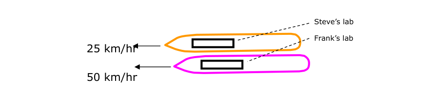
The two liners side by side: Steve’s lab travels at 25 km/hr, Frank’s lab at 50 km/hr.Both experimenters each have an identical piece of equipment:
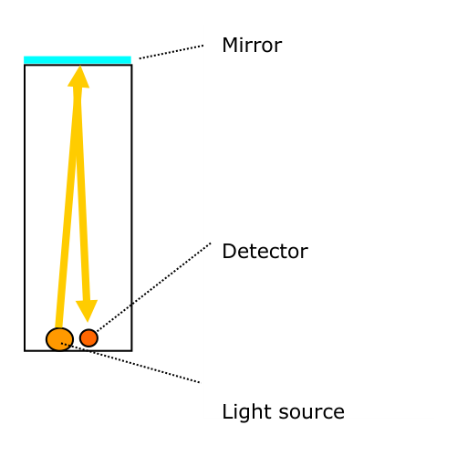
The apparatus: a light source sends a pulse vertically up to a mirror, which reflects it down to a detector; height .A light source sends a pulse of light vertically upwards to be then reflected vertically downwards by a mirror. A highly accurate detector measures the time for the up-down journey of the pulse.
Both Frank and Steve carry out the same experiment each in their own lab and calculate the speed of light by measuring the time of flight of the pulse:
[Blank 1] (equation/expression to fill in) — relating , and .
They talk by phone and find that each has found that their two results for the speed of light are exactly the same. They are not surprised by this because, although one lab was moving at 25 km/hr relative to the other, neither lab was accelerating. Specifically, these experimenters are remembering from their university physics lectures that:
The ‘laws’ of physics are the same for all experimenters in non-accelerating motion.
They now carry out a second experiment by adjusting each detector so that it can measure the time of flight of the pulse in the other laboratory. Frank’s liner is overtaking Steve’s and Frank sees Steve and his lab and his equipment moving to his (Frank’s) right:
Frank sees the pulse of light in Steve’s equipment start its upward journey and sees Steve’s mirror move to his right during the time taken for the pulse to reach the mirror. After reflection, Frank sees the pulse following an angled path downwards as shown in this diagram:
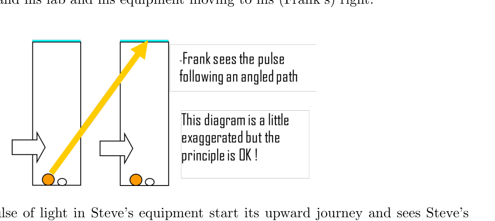
As seen by Frank, the pulse in Steve’s moving lab follows an angled (zig-zag) path. (Diagram exaggerated, but the principle is OK.)Steve sees Frank and his lab moving to his right as Frank’s liner overtakes. When they compare notes, both Steve and Frank find that they have observed the same angled-path phenomenon.
They now do some analysis and write down the following:
Let be the time taken for the pulse to travel from the source and back to the detector as measured by the experimenter on board the other liner. During this time the relative movement of one liner relative to the other is [inline blank] where is the speed of one liner relative to the other. The distance travelled by the pulse according to the experimenter in the other liner is:
Therefore, the speed of light according to the experimenter in the other liner, is [inline blank] so:
[Blank 2] (equation/expression to fill in) — for (or ) in terms of , , .
Steve and Frank ponder on this result. They have recently heard that a guy called Einstein has been doing some work concerning the velocity of light but at this moment in time they are unaware of Einstein’s conclusions. So Steve and Frank do the ‘obvious’ thing and agree that the time for the pulse of light to travel up and down vertically in one lab ‘has to be exactly the same’ as the pulse to travel up and down along the angled path in the other. That is, they assume that and combine Equations 1 and 2 to obtain:
[Blank 3] (equation/expression to fill in) — the result obtained assuming .
This result they find most interesting, for it suggests that when an experimenter measures the speed of light in a laboratory that is moving relative to him, the measured speed is greater than that which he would measure in his own lab. The greater the difference in relative speed between the laboratories, the greater the difference between the two speeds of light.
Steve and Frank agree that their result is in fact an Earth-shaker and they get down to preparing a paper for publication.
They then manage to get hold of a copy of Einstein’s 1905 paper and are disturbed by it. According to Einstein, every measurement of the speed of light (in a vacuum) — whatever the speed of the experimenter relative to the source of the light — will yield the same result. They can see that, if Einstein had been helping them with their experiments on board the two liners, then he would have argued that the speed of light as measured by Steve in his own lab and by Frank looking in on Steve’s equipment in Steve’s moving lab would be the same. The same result would be found by Steve looking in on Frank’s experiment. Einstein would have argued that [inline blank].
Our two brave experimenters now make the assumption [inline blank] [inline blank] and combine Equations 1 and 2 and, after a bit of algebra, they obtain:
[Blank 4] (equation/expression to fill in) — the result obtained under Einstein’s assumption (a denominator that is always less than 1).
Again, they ponder on what this means. There is no escaping from the fact that Equation 4 is telling them that, according to Frank looking in on Steve’s moving lab, Steve’s time was passing more slowly than his (Frank’s) time because the denominator of 4 will always be less than 1. And Steve would draw exactly the same conclusion about the rate of passing of Frank’s time in Frank’s moving lab. That the rate of passage of time is not the same for everyone is a more odd-ball result than that of the speed of light increasing when one looks in on a light-speed measurement experiment that is on the move!
Steve and Frank are faced with a choice. If they assume then they obtain Equation 3. If they assume [inline blank] [inline blank] then they obtain Equation 4. Which one is right? They put the publishing of their epic paper on hold!
Dr John Davis — University of Hertfordshire
Fonte: Testo (PDF) — p.4 Topic: Special Relativity, Modern-Quantum Physics Metodi: Lorentz Transformation, Physical Modeling, Symmetry Argument Competenze: Physical Reasoning, Diagrammatic Reasoning Objects: Mirror
Einstein’s Story
In this story some parts are missing! Vi viene chiesto di compilare i vuoti etichettati in rosso. Questi spazi vuoti numerati potrebbero essere un’equazione, un’espressione o uno sketch. Niente trucchi! Very straightforward!
(a) (10 points) Suppose that two experimenters, Frank and Steve, are carrying out identical measurements using light on board two liners that are crossing the Atlantic in calm weather. Frank ha il suo laboratorio sul ponte di un’altra nave e Steve ha il suo laboratorio sul ponte dell’altra. Il trasbordatore con Frank a bordo si sta muovendo a 50 km/h e il trasbordatore con Steve a bordo si sta muovendo a 25 km/h nella stessa direzione. Entrambi i laboratori hanno grandi finestre, così Frank può guardare nel laboratorio di Steve dal suo laboratorio e viceversa per il periodo in cui i rivestimenti sono fianco a fianco, con il più veloce superando il più lento:
The two liners side by side: Steve’s lab travels at 25 km/hr, Frank’s lab at 50 km/hr.
Entrambi gli esperimentatori hanno ciascun equipaggiamento identico:
L’apparecchio: una fonte luminosa invia un impulso verticalmente verso lo specchio, che lo riflette verso il basso a un rilevatore; altezza .
Una fonte di luce invia un impulso di luce verticalmente verso l’alto per essere poi riflessa verticalmente verso il basso da uno specchio. Un rilevatore altamente preciso misura il tempo del viaggio verso l’alto e verso il basso del polso.
Both Frank and Steve carry out the same experiment each in their own lab and calculate the speed of light by measuring the time of flight of the pulse:
**[Blank 1] ** *(equazione/espressione da compilare) * relativa a , e .
Parlano al telefono e scoprono che ognuno ha scoperto che i loro due risultati per la velocità della luce sono esattamente gli stessi. Non sono sorpresi da questo perché, sebbene un laboratorio si muovesse a 25 km/h rispetto all’altro, nessuno dei due si stava accelerando. In particolare, questi esperimentatori ricordano dalle loro lezioni di fisica universitaria che:
The ‘laws’ of physics are the same for all experimenters in non-accelerating motion.
Ora eseguono un secondo esperimento, regolare ogni rilevatore in modo che possa misurare il tempo di volo del polso nell’altro laboratorio. Il liner di Frank sta superando quello di Steve e Frank vede Steve e il suo laboratorio e le sue attrezzature spostarsi a destra:
Frank vede il polso di luce nell’attrezzatura di Steve iniziare il suo viaggio verso l’alto e vede lo specchio di Steve muoversi a destra durante il tempo necessario per raggiungere lo specchio. Dopo la riflessione, Frank vede l’impulso seguendo un percorso angolato verso il basso come mostrato in questo diagramma:
As seen by Frank, the pulse in Steve’s moving lab follows an angled (zig-zag) path. (Diagram exaggerated, but the principle is OK.)
Steve vede Frank e il suo laboratorio muoversi a destra mentre il liner di Frank si ritrova. Quando confrontano le note, sia Steve che Frank scoprono di aver osservato lo stesso fenomeno di percorso angolato.
Ora fanno qualche analisi e scrivono quanto segue:
Il tempo necessario per il viaggio dell’impulso dalla fonte e di ritorno al rilevatore è il tempo misurato dall’esperimentatore a bordo dell’altro recipiente. Durante questo periodo il movimento relativo di un rivestimento rispetto all’altro è [line blank], dove è la velocità di un rivestimento rispetto all’altro. La distanza percorsa dall’impulso secondo l’esperimentatore nell’altro rivestimento è:
Pertanto, la velocità della luce secondo l’esperimentatore nell’altro rivestimento è [line blank] così:
[Blank 2] *(equazione/espressione da compilare) * per (o ) in termini di , , .
Steve e Frank riflettono su questo risultato. Hanno recentemente sentito che un tizio di nome Einstein ha fatto qualche lavoro sulla velocità della luce ma al momento non sono a conoscenza delle conclusioni di Einstein. Quindi Steve e Frank fanno la cosa “obvia” e concordano che il tempo per il pulso di luce di viaggiare su e giù verticalmente in un laboratorio “deve essere esattamente lo stesso” come il pulso di viaggiare su e giù lungo il percorso angolato nell’altro. Cioè, assumono che e combinano le equazioni 1 e 2 per ottenere:
[Blank 3] *(equazione/espressione da riempire) * il risultato ottenuto supponendo .
Questo risultato è molto interessante, poiché suggerisce che quando un esperimentatore misura la velocità della luce in un laboratorio che si muove rispetto a lui, la velocità misurata è maggiore di quella che avrebbe misurato nel suo laboratorio. Più grande è la differenza di velocità relativa tra i laboratori, maggiore è la differenza tra le due velocità della luce.
Steve e Frank concordano che il loro risultato è in realtà un scossa-terra e si mettono a preparare un articolo per la pubblicazione.
Poi riescono a ottenere una copia del documento di Einstein del 1905 e ne sono disturbati. Secondo Einstein, ogni misura della velocità della luce (in vuoto) qualunque sia la velocità dell’esperimentatore rispetto alla fonte della luce darà lo stesso risultato. Vengono a vedere che, se Einstein li avesse aiutati con i loro esperimenti a bordo delle due navi, allora avrebbe sostenuto che la velocità della luce misurata da Steve nel suo laboratorio e da Frank che guardava l’attrezzatura di Steve nel laboratorio di Steve sarebbe la stessa. Lo stesso risultato sarebbe stato trovato da Steve che guardava l’esperimento di Frank. Einstein avrebbe sostenuto che ** [linea vuota] **.
I nostri due coraggiosi esperimentatori ora fanno l’ipotesi [line blank] [line blank] e combinano le equazioni 1 e 2 e, dopo un po’ di algebra, ottengono:
**[Blank 4] ** *(equazione/espressione da riempire) * il risultato ottenuto con l’ipotesi di Einstein (un denominatore che è sempre inferiore a 1).
Ancora una volta, riflettono su cosa significhi questo. Non ci sono esce dal fatto che l’Equazione 4 sta dicendo loro che, secondo Frank che guardava nel laboratorio in movimento di Steve, il tempo di Steve stava passando più lentamente del suo tempo (di Frank ) perché il denominatore di 4 sarà sempre inferiore a 1. E Steve avrebbe fatto esattamente la stessa conclusione sul tasso di tempo di Frank nel laboratorio di trasferimento. Che il tempo non passa allo stesso ritmo per tutti è un risultato più strano di quello della velocità della luce che aumenta quando si guarda un esperimento di misura della velocità della luce in movimento!
Steve e Frank devono scegliere. Se assumono ottengono l’Equazione 3. Se assumono [inline blank] [inline blank] ottengono l’Equazione 4. - Quale di queste ha ragione? Hanno messo in attesa la pubblicazione del loro epico documento!
Dr John Davis Università di Hertfordshire
Fonte: Testo (PDF) — p.4 Topic: Special Relativity, Modern-Quantum Physics Metodi: Lorentz Transformation, Physical Modeling, Symmetry Argument Competenze: Physical Reasoning, Diagrammatic Reasoning Objects: Mirror
Time of Flight
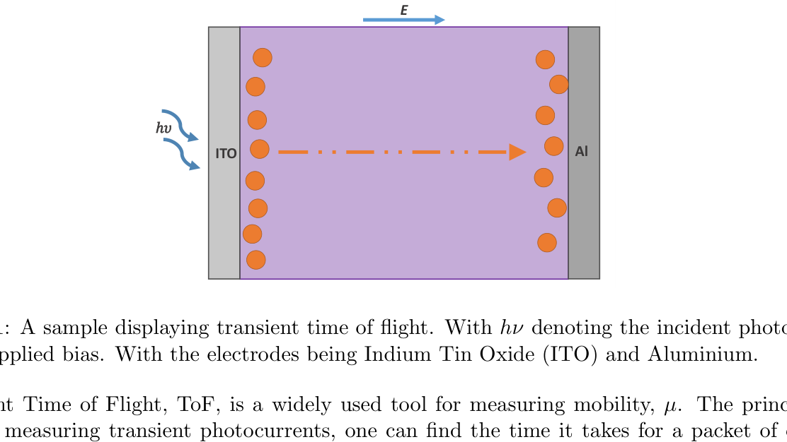
Figure 1: A sample displaying transient time of flight. With denoting the incident photon and the applied bias. With the electrodes being Indium Tin Oxide (ITO) and Aluminium.Transient Time of Flight, ToF, is a widely used tool for measuring mobility, . The principle is that by measuring transient photocurrents, one can find the time it takes for a packet of charge carriers to reach across the bulk of the testing material when driven by an applied bias voltage. The electron-hole pairs are generated by excitation, typically using a single pulsed laser. These are generated near the incident electrode and will travel together across the sample being measured as a charge packet in the direction of the appropriate voltage bias. Once at the far electrode, the charge carriers can be extracted and the transit time, , measured. This process is depicted in figure 1.
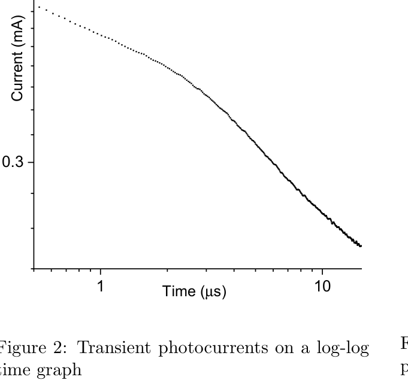
Figure 2: Transient photocurrents on a log-log time graph.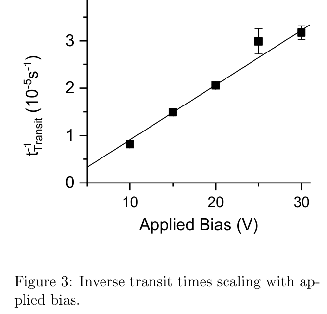
Figure 3: Inverse transit times scaling with applied bias.(a) (2 points) Figure 2 shows a typical log-log plot of photocurrent against time. Deduce from this graph where the transit time will be and explain why you have chosen this position. You do not need to give an actual value of the transit time.
To find the mobility, one uses the relation:
Where is voltage and denotes the device thickness, typically . One can plot this linear relationship of inverse transit time against a applied voltage bias, as can be shown in figure 3.
(b) (2 points) From figure 3, calculate the charge carrier mobility of this sample. Include an appropriate error in your answer.
(c) (2 points) We have not yet discussed what kind of charge carriers we are measuring. Using the information already provided, what charge particle have we measured mobility for? What happens to the opposite charge?
(d) (1 point) The charge carriers can get trapped while moving through the bulk of the sample on the way to the electrode. Give a example of one such kind of trap.
(e) (2 points) How will the charge particles being trapped affect the charge packet and how will figure 2 change?
(f) (1 point) What will figure 2 look like if we didn’t apply a bias voltage? Explain why.
Dr James Kneller — Queen Mary, University of London
Fonte: Testo (PDF) — p.7 Topic: Modern-Quantum Physics, Circuits Metodi: Graph Linearization, Experimental Data Analysis, Error Propagation, Curve Fitting Competenze: Experimental Data Analysis, Graph Linearization, Error Propagation Objects: Photon, Electron
Tempo di volo
Figura 1: campione che mostra il tempo di volo transitorio. Con che indica il fotone incidente e il pregiudizio applicato. Con gli elettrodi Indium Tin Oxide (ITO) e Aluminio.
Il tempo di volo transitorio, ToF, è uno strumento di misurazione della mobilità ampiamente utilizzato, . Il principio è che misurando le fotocorrenti transitorie, si può trovare il tempo necessario per un pacchetto di portatori di carica per raggiungere la maggior parte del materiale di prova quando guidato da una tensione di bias applicata. Le coppie di buchi elettronici sono generate da eccitazione, tipicamente utilizzando un singolo laser pulsato. Questi vengono generati vicino all’elettrodo incidente e viaggieranno insieme attraverso il campione misurato come pacchetto di carica nella direzione del bias di tensione appropriato. Una volta raggiunto l’elettrodo lontano, i portatori di carica possono essere estratti e il tempo di transito, , misurato. Questo processo è illustrato nella figura 1.
Figura 2: Correnti fotovoltaici transitori su un grafico di tempo log-log.
Figura 3: tempi di transito inverso di scalazione con bias applicato.
**(a) ** (2 punti) La figura 2 mostra un diagramma tipico di log log di fotocurrent rispetto al tempo. Deduci da questo grafico dove sarà il tempo di transito e spiega perché hai scelto questa posizione. Non è necessario indicare un valore effettivo del tempo di transito.
Per trovare la mobilità si usa la relazione:
Se è tensione e indica lo spessore del dispositivo, in genere . Si può tracciare questa relazione lineare del tempo di transito inverso contro un bias di tensione applicato, come può essere mostrato nella figura 3.
**(b) ** (2 punti) Calcolare dalla figura 3 la mobilità del vettore di carica di questo campione. Includi un errore appropriato nella tua risposta.
**(c) ** (2 punti) Non abbiamo ancora discusso di quale tipo di portatori di carica stiamo misurando. Usando le informazioni già fornite, per quale particella di carica abbiamo misurato la mobilità? Che succede all’accusa opposta?
**(d) ** (1 punto) I portatori di carica possono rimanere intrappolati mentre si muovono attraverso la gran parte del campione sulla strada verso l’elettrodo. Cita un esempio di questo tipo di trappola.
**(e) ** (2 punti) Come influiranno le particelle di carica intrappolate sul pacchetto di carica e come cambierà la figura 2?
**(f) ** (1 punto) Come sarà la figura 2 se non applichiamo una tensione di bias? Spiegate il motivo.
Dr. James Kneller Queen Mary, Università di Londra
Fonte: Testo (PDF) — p.7 Topic: Modern-Quantum Physics, Circuits Metodi: Graph Linearization, Experimental Data Analysis, Error Propagation, Curve Fitting Competenze: Experimental Data Analysis, Graph Linearization, Error Propagation Objects: Photon, Electron
Phonon-assisted charge transport in 2D
Consider a two-dimensional monatomic crystal with a square lattice. In this problem we choose two neighbouring sites A and B, away from the boundaries of the material, and calculate the resistance between them.
(a) (5 points) In this material, charges hop between the neighbouring sites to lower their energy, while simultaneously ejecting phonons (bosonic quanta of lattice vibrations). Here, we focus on the system constituted only by the neighbouring sites A and B, coupled to the phonon reservoir. The dynamics is modelled by the following Hamiltonian:
Where is a voltage difference between the sites A and B, is a phonon group velocity, is a strength of a phonon-jump coupling, is an operator creating a phonon with a wavevector , and is a corresponding phonon number operator.
Assuming that the charge is initially on the site A, and that the phonon reservoir is empty, estimate the resistance between the sites. The area of the material is .
(b) (3 points) Of course, the charge can hop to each of the neighbouring sites. Here we apply a semi-classical approximation to account for this effect. Consider all the edges between the lattice sites to be resistors with a resistance . Calculate the effective resistance between the neighbouring sites A and B assuming that the area of the material is much greater than the area of a unit cell, and that the current vanishes at the boundaries of the material.
(c) (2 points) How would this result change if sites were distributed on a honeycomb, but phonon properties remained unchanged?
In the last two parts of the question you can take as given or your answer to part a.
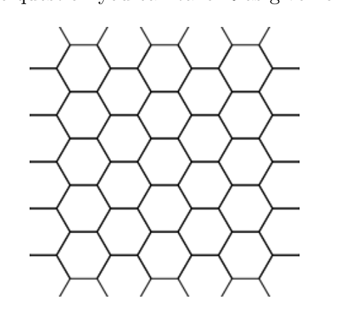
Figure 4: Honeycomb.Leon Zaporski, Quantum Optical Materials and Systems — U of Cambridge
Fonte: Testo (PDF) — p.9 Topic: Modern-Quantum Physics, Circuits Metodi: Symmetry Argument, Equivalent Circuit Reduction, Superposition Principle, Physical Modeling Competenze: Physical Reasoning, Mathematical Modeling Objects: Resistor
Transporto di carica assistito da telefono in 2D
Consideriamo un cristallo monatomico bidimensionale con una rete quadrata. In questo problema scegliamo due siti vicini A e B, lontani dai confini del materiale, e calcoliamo la resistenza tra di loro.
**(a) ** (5 punti) In questo materiale, i carichi si effettuano tra i siti vicini per abbassare la loro energia, mentre vengono simultaneamente espulsi i fononi (quanti bosonici di vibrazioni della reticola). Qui ci concentriamo sul sistema costituito solo dai siti vicini A e B, accoppiati al serbatoio di fononi. La dinamica è modellata dal seguente hamiltoniano:
Se è una differenza di tensione tra i siti A e B, è una velocità di gruppo fononico, è una forza di accoppiamento di salto fononico, è un operatore che crea un fonone con un vettore d’onda e è un operatore di numero fononico corrispondente.
Supponendo che la carica sia inizialmente sul sito A, e che il serbatoio di fononi sia vuoto, estimi la resistenza tra i siti. L’area del materiale è .
**(b) ** (3 punti) Naturalmente, la carica può arrivare a ciascun sito vicino. Qui applichiamo un’approssimazione semi-classica per spiegare questo effetto. Considera che tutti i bordi tra i siti della griglia siano resistenti con una resistenza . **Calcolare la resistenza effettiva tra i siti vicini A e B ** supponendo che l’area del materiale sia molto maggiore dell’area di una cella unità e che la corrente scompari ai confini del materiale.
**(c) ** (2 punti) Come cambierebbe questo risultato se i siti fossero distribuiti su un cespuglio di miele, ma le proprietà del fonone restassero invariate?
Nell’ultima parte della domanda si può prendere come dato o la risposta alla parte a.
Figura 4: Cucina di miele.
Leon Zaporski, Materiali e sistemi ottici quantistici U di Cambridge
Fonte: Testo (PDF) — p.9 Topic: Modern-Quantum Physics, Circuits Metodi: Symmetry Argument, Equivalent Circuit Reduction, Superposition Principle, Physical Modeling Competenze: Physical Reasoning, Mathematical Modeling Objects: Resistor
Newcomen’s Beam Engine
The Industrial Revolution in Britain started when ‘steam engines’ began to supplement and then replace wind, water and horse power. The first of such engines was built by Thomas Newcomen in 1712 and was used to drain water from a coal mine that was about 50 m deep. By the time of Newcomen’s death in 1739 about a hundred of his engines were in operation in Britain. These were all beam engines. Their design was much improved by James Watt from 1760 onwards — with the oscillatory motion of beam engines being adapted in about 1780 to produce the more useful, rotary motion. All that will be now said is that during the next hundred and fifty years a huge range of steam engine variants emerged. There are several examples of Newcomen’s Engine in existence, including one at the Science Museum, London.
Newcomen’s original engine was massive, being about the size of a large house. Here is a hypothetical engine based roughly on Newcomen’s design. It has the same operating principle of his engine but with quite different proportions appropriate for present purposes. The boiler supplying steam is not shown.
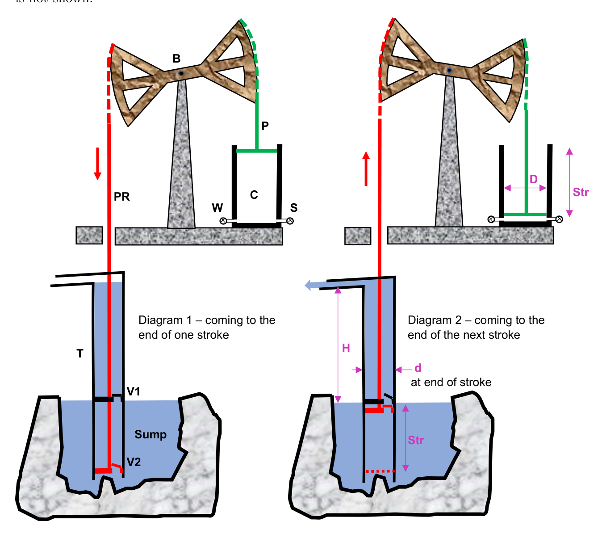
The hypothetical Newcomen beam engine. Diagram 1 (left): coming to the end of one (downward) stroke. Diagram 2 (right): coming to the end of the next stroke. Labels: beam B, piston rod P, steam cylinder C, pump rod PR (red), fixed tube T, flap valves V1 and V2, steam valve S, water-spray valve W, sump, stroke Str, diameters D and d, height H.The large (wooden) beam B pivots about its mid-point. Its rocking motion raises and lowers a piston rod P and piston (green) in the ‘steam’ cylinder C and a very long and heavy pump rod PR (red) that descends down the mine shaft. This latter rod moves within a fixed, cylindrical tube T that dips into the sump into which the mine water collects. V1 is a ‘flap’ valve fixed within T. V2 is also a ‘flap’ valve that is part of the piston attached to the end of the pumping rod. The weight of the (red) pumping rod PR and piston is intentionally greater than the weight of the (green) piston rod P and piston.
The original engine did not run by itself and required an operator to open and shut valves in sequence. Diagram 1 shows the engine just before the end of the pumping rod’s downward motion which ends by the piston ‘thumping’ against a ‘stop’. Several cycles of engine operation have already taken place in order to prime the pump. The steam valve S has been open allowing steam at atmospheric pressure to enter cylinder C. The greater weight of the pumping rod has caused it to descend with valve V2 open and, as the piston at the end of the rod moves down into the sump, sump water enters the lower part of the cylindrical tube T. Valve V1 has remained shut as the pumping rod has moved downwards.
The operator now shuts off the steam supply valve S and for a very short time opens the valve W to introduce a fine spray of cold water into C. This condenses the steam and causes a vacuum to develop within C. Atmospheric pressure acting on the (green) piston begins to push it downwards and to begin to raise the pumping rod PR. Valve V1 now opens and valve V2 shuts. Diagram 2 shows the end of this stroke with the (green) piston about to ‘bottom’ and stop. During the upward, ‘working’ stroke of the engine water inside T is raised so as to flow out of the mine at ground level. The operator now opens the steam valve S to ‘kill’ the vacuum in C and to start the next cycle of operation.
(a) (10 points) You are asked to calculate the volume of water raised up and removed from the sump per cycle of engine operation using the following information.
A cycle is simply a downward and an upward stroke of PR or, equivalently, an upward and a downward stroke of P, with both strokes being of the same length. Not surprisingly, your answer will depend upon the assumptions that you make so it is important for you to make a list of these.
- Excess mass of pumping rod PR over rod P,
- Stroke,
- Diameter,
- Diameter,
- Atmospheric pressure,
- Height,
Dr John Davis — University of Hertfordshire
Fonte: Testo (PDF) — p.10 Topic: Fluid Mechanics, Thermodynamics Metodi: Hydrostatic Equilibrium, Conservation of Energy, Free-Body Diagram, Physical Modeling Competenze: Physical Reasoning, Diagrammatic Reasoning Objects: Beam, Piston, Cylinder
Motore a fascio per nuovi arrivati
La rivoluzione industriale in Gran Bretagna è iniziata quando i “motori a vapore” hanno cominciato a integrare e poi a sostituire l’energia eolica, l’acqua e il cavallo. Il primo di questi motori fu costruito da Thomas Newcomen nel 1712 e fu utilizzato per drenare l’acqua da una miniera di carbone che aveva una profondità di circa 50 metri. Quando Newcomen morì nel 1739, circa cento dei suoi motori erano in funzione in Gran Bretagna. Questi erano tutti motori a raggi. Il loro design fu molto migliorato da James Watt dal 1760 in poi, con il movimento oscillatorio dei motori a fascio che venne adattato intorno al 1780 per produrre il movimento rotativo più utile. Tutto ciò che si dirà ora è che nel corso dei prossimi centocinquanta anni è emersa una vasta gamma di varianti del motore a vapore. Esistono diversi esempi del motore di Newcomen, tra cui uno al Science Museum di Londra.
Il motore originale di Newcomen era massiccio, circa la dimensione di una grande casa. Ecco un motore ipotetico basato sul design di Newcomen. Ha lo stesso principio di funzionamento del suo motore, ma con proporzioni molto diverse, adatte agli attuali scopi. Non è indicato il caldaio che fornisce vapore.
Il motore ipotetico del fascio Newcomen. Diagramma 1 (a sinistra): arriva alla fine di un tratto (in discesa). Diagramma 2 (a destra): arrivo alla fine del prossimo colpo. Etichette: fascia B, bastone a pistone P, cilindro a vapore C, bastone a pompa PR (rosso), tubo fisso T, valvole a lampadine V1 e V2, valvole a vapore S, valvole a spruzzo d’acqua W, cisterna, strumento str, diametri D e d, altezza H.*
Il grosso raggio B si gira intorno al suo punto medio. Il suo movimento d’agganciamento alza e abbassa una canna da pistone P e un pistone (verde) nel cilindro “a vapore” C e una canna da pompa molto lunga e pesante PR (rosso) che scende verso il pozzo della miniera. Questa ultima canna si muove all’interno di un tubo T fisso e cilindrico che si immerge nella cisterna in cui l’acqua della miniera si accumula. V1 è una valvola “flap” fissata all’interno di T. La valvola V2 è anche una valvola “flap” che fa parte del pistone attaccato all’estremità della canna di pompaggio. Il peso della canna di pompaggio (rosso) PR e del pistone è intenzionalmente superiore al peso della canna di pompaggio (verde) P e del pistone.
Il motore originale non funzionava da solo e richiedeva che un operatore aprisse e chiudesse le valvole in sequenza. Il diagramma 1 mostra il motore poco prima della fine del movimento verso il basso della canna di pompaggio che termina col pistone “colpendo” contro un “stop”. Per il processo di preparazione della pompa sono già stati effettuati diversi cicli di funzionamento del motore. La valvola a vapore S è stata aperta, permettendo al vapore a pressione atmosferica di entrare nel cilindro C. Il peso maggiore della canna di pompaggio ha causato la discesa con la valvola V2 aperta e, mentre il pistone alla fine della canna si sposta verso il basso nella cisterna, l’acqua della cisterna entra nella parte inferiore del tubo cilindrico T. La valvola V1 è rimasta chiusa mentre la canna di pompaggio si è spostata verso il basso.
L’operatore spegne ora la valvola di alimentazione a vapore S e apre per un breve periodo la valvola W per introdurre un sciacquaggio fino di acqua fredda in C. Questo condensa il vapore e provoca un vuoto all’interno di C. La pressione atmosferica che agisce sul pistone (verde) inizia a spingerlo verso il basso e a aumentare il PR della canna di pompaggio. La valvola V1 si apre e la valvola V2 si chiude. Il diagramma 2 mostra la fine di questo colpo con il pistone (verde) che sta per “infine” e fermarsi. Durante il movimento “lavoratore” verso l’alto, l’acqua del motore all’interno di T viene sollevata in modo da uscire dalla miniera a livello di terra. L’operatore apre ora la valvola a vapore S per “uccidere” il vuoto in C e avviare il prossimo ciclo di funzionamento.
**(a) ** (10 punti) Si chiede di calcolare il volume di acqua sollevata e rimossa dalla cisterna per ciclo di funzionamento del motore utilizzando le seguenti informazioni.
Un ciclo è semplicemente un tratto verso il basso e un tratto verso l’alto di PR o, equivalentemente, un tratto verso l’alto e un tratto verso l’indietro di P, con entrambi i trattati della stessa lunghezza. Non sorprende che la tua risposta dipenda dalle ipotesi che fai, quindi è importante fare una lista di queste.
- Massaggio eccessivo di bastone di pompaggio PR su bastone P,
- Ictus,
- diametro
- diametro
- Pressione atmosferica,
- altezza,
Dr John Davis Università di Hertfordshire
Fonte: Testo (PDF) — p.10 Topic: Fluid Mechanics, Thermodynamics Metodi: Hydrostatic Equilibrium, Conservation of Energy, Free-Body Diagram, Physical Modeling Competenze: Physical Reasoning, Diagrammatic Reasoning Objects: Beam, Piston, Cylinder
1888
The following set of questions are taken from a first year physics and maths exam of the University of Sydney for the year 1888. We will accept answers both in line of the understanding of the time and our current thinking. You will need to answer all parts of the questions to get the point.
(a) (1 point) Explain why the moon does not fall on to the earth.
(b) (1 point) What was the famous experiment of Archimedes relating to the volume of water displaced from a full vessel by a body immersed in it? How is the principle applied in finding specific gravity?
(c) (1 point) Explain as fully as possible the effects of —
- i. Raising the temperature of a volume of air enclosed in a vessel.
- ii. Increasing the pressure; while the temperature is kept constant.
(d) (1 point) Explain exactly how you would set about making a Barometer. What does a barometer measure?
(e) (1 point) Give some explanation of the phenomenon of lightning. What is the supposed use of lightning conductors?
(f) (1 point) Draw a diagram explaining the working parts and mode of action of the ordinary steam engine.
(g) (1 point) What is meant by the term electrolysis? Illustrate your answer by some simple example, and note the variations in the state of the energy of the system during the process.
(h) (1 point) What is a magnet? How would you make one?
(i) (1 point) Draw a diagram and explain the action of an ordinary Photographic Camera. Why do we fail, as a rule, in attempting to take a photograph by gaslight?
(j) (1 point) Shew that:
UNIVERSITY OF SYDNEY, 1888. Answers provided by Anthony Quinlan — University of Durham
Fonte: Testo (PDF) — p.12 Topic: Mathematics, Electromagnetism Metodi: Calculus-Integration, Physical Modeling, Newton’s Law of Gravitation Competenze: Physical Reasoning, Mathematical Modeling Objects: Magnet, Manometer, Planet
1888
Le seguenti domande sono state prese da un esame di fisica e matematica del primo anno dell’Università di Sydney nel 1888. Accetteremo risposte sia in linea con la comprensione del tempo che con il nostro attuale modo di pensare. Per capire il punto, dovrai rispondere a tutte le parti delle domande.*
(a) (a) (a) (a) (a) (a) (a) (a) (a) (a) (a) (b) (a) (a) (a) (b) (c) (a) (b) (c) (a) (a) (a) (b) (c) (a) (c) (a) (a) (a) (b) (c) (c) (b) (c) (c) (a) (a) (a) (a) (a) (a) (a) (a) (a) (b) (c) (b) (c) (a) (b) (c) (b) (c) (c) (c) (b) (c) (c) (d) (c) (d) (d) (d) (d) (e) (e) (d) (e) (e) (e) (e) (e) (e) (e) (e) (e) (e) (e) (e) (e) (e) (e) (e) (e) (e) (e) (e) (e) (e) (e) (e) (e) (e) (e) (e) (e) (e) (e) (e) (e) (e) (e) (e) (e) (e) (e) (e) (e) (e) (e) (e) (e) (e) (e) (e) (e) (e) (e) (e) (e) (e) (e) (e) (e) (e) (e) (e) (e) (e) (e) (e) (e) (e) (e) (e) (e) (e) (e) (e) (e) (e) (e) (e) (e) (e) (e) (e) (e) (e) (e) (e) (e) (e) (e) (e) (e) (e) (e) (e) (e) (e) (e) (e) (e) (e) (e) (e) (e) (e) (
(I punti) Qual era il famoso esperimento di Archimede relativo al volume di acqua spostata da un vascello pieno da un corpo immerso in esso? Come si applica il principio nel trovare la gravità specifica?
**(c) ** (1 punto) Spiegare il più pienamente possibile gli effetti di
- i. Aumentare la temperatura di un volume di aria chiuso in una nave.
- ii. Aumentare la pressione, mantenendo la temperatura costante.
**(d) ** (1 punto) Spiegare esattamente come si dovrebbe fare un Barometro. Cosa misura un barometro?
**(e) ** (1 punto) Fornisci qualche spiegazione del fenomeno del fulmine. Qual è l’uso presunto dei conduttori di fulmine?
**(f) ** (1 punto) Disegnare un diagramma che espliciti le parti di lavoro e il modo di funzionamento della macchina a vapore ordinaria.
**(g) ** (1 punto) Che cosa si intende per l’elettroliesi? Illustra la tua risposta con un semplice esempio e nota le variazioni nello stato di energia del sistema durante il processo.
**(h) ** (1 punto) Che cos’è un magnete? Come ne faresti una?
**(i) ** (1 punto) Disegnare un diagramma e spiegare l’azione di una normale fotocamera. Perché non riusciamo, di regola, a fare una fotografia con una luce a gas?
**(j) ** (1 punto) Indicare che:
L’Università di Sydney, 1888. Risposte fornite da Anthony Quinlan Università di Durham*
Fonte: Testo (PDF) — p.12 Topic: Mathematics, Electromagnetism Metodi: Calculus-Integration, Physical Modeling, Newton’s Law of Gravitation Competenze: Physical Reasoning, Mathematical Modeling Objects: Magnet, Manometer, Planet
Dominoes and Pendulums
(a) (6 points) Consider Figure 5 (a) which shows a uniform two dimensional domino of height and width with . The domino is placed such that the bottom right bottom corner is at the origin and it follows that the centre of mass of the domino is at the position . For the domino has lower energy when lying on its side, so that the centre of mass is at the position , see Figure 5 (b). Why doesn’t the domino achieve its minimum energy by spontaneously falling on its side?
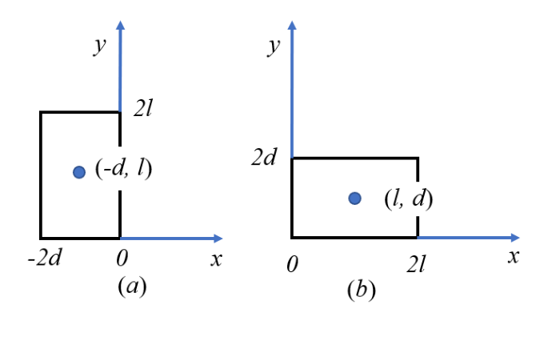
Figure 5: Domino in (a) high energy and (b) low energy state. In (a) the domino spans , with centre of mass at ; in (b) it spans , with centre of mass at .(b) (4 points) Figure 6 shows a simple pendulum, where a bob of mass is suspended by a light, inextensible and taut rod. The bob is displaced by an angle and moves under the influence of gravity with the acceleration due to gravity is .
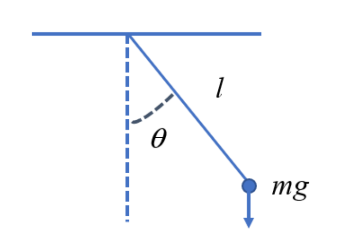
Figure 6: The simple pendulum. A bob of mass on a rod of length displaced by angle from the vertical, with weight acting downwards.The equation of motion when the bob is displaced by the angle is easily derived and found to be:
For small angles the approximation is valid and the equation of motion becomes:
and the solution for the ensuing motion when the initial conditions are , , i.e. the bob starts from rest from the angle is:
One implication of this is that the period of the motion, , is given as and is independent of the amplitude (as long as the amplitude is small enough such that the approximation of remains valid during the motion).
Present a simple argument based on continuity that suggests that the period increases as the initial amplitude increases such that the approximation of small angle is not justified.
James Mc Tavish — Liverpool (Retired)
Fonte: Testo (PDF) — p.13 Topic: Oscillations & Waves, Rigid Body Statics Metodi: Simple Harmonic Motion Analysis, Small-Angle Approximation, Energy Conservation Method, Symmetry Argument Competenze: Physical Reasoning, Mathematical Modeling Objects: Pendulum
Domini e penduli
**(a) ** (6 punti) Considerare la figura 5 (a) che mostra un domino bidimensionale uniforme di altezza e larghezza con . Il domino è posizionato in modo tale che l’angolo inferiore a destra sia all’origine e ne consegue che il centro di massa del domino sia nella posizione . Per il dominone ha una energia inferiore quando si trova sul lato, in modo che il centro di massa sia nella posizione , vedere figura 5 (b). Perché il domino non raggiunge la sua minima energia cadendo spontaneamente sul suo fianco?
Figura 5: Domino a) stato ad alta energia e b) stato a bassa energia. In a) il domino si estende a , con centro di massa a ; in b) si estende a , con centro di massa a .
**(b) ** (4 punti) La figura 6 mostra un semplice pendolo, in cui un bobino di massa è sospeso da una canna leggera, inestensibile e stretta. Il bob è spostato da un angolo e si muove sotto l’influenza della gravità con l’accelerazione dovuta alla gravità .
Figura 6: Il semplice pendolo. Una bobina di massa su una canna di lunghezza spostata da un angolo verso il basso, con peso che agisce verso il basso.
L’equazione di movimento quando il bob è spostato dall’angolo è facilmente derivata e si scopre che è:
Per gli angoli piccoli l’approssimazione è valida e l’equazione di movimento diventa:
e la soluzione per il successivo movimento quando le condizioni iniziali sono , , ovvero il bobina parte da riposo dall’angolo è:
Una delle implicazioni di questo è che il periodo del movimento, , è dato come ed è indipendente dall’ampiezza (fino a quando l’ampiezza è abbastanza piccola da mantenere valido l’approssimazione di durante il movimento).
Presenta un semplice argomento basato sulla continuità che suggerisce che il periodo aumenta con l’aumento dell’ampiezza iniziale in modo tale che l’approssimazione dell’angolo piccolo non sia giustificata.
*James Mc Tavish Liverpool (Retiro) *
Fonte: Testo (PDF) — p.13 Topic: Oscillations & Waves, Rigid Body Statics Metodi: Simple Harmonic Motion Analysis, Small-Angle Approximation, Energy Conservation Method, Symmetry Argument Competenze: Physical Reasoning, Mathematical Modeling Objects: Pendulum
Buried Room
(a) (10 points) Imagine that you could build a large room (10m x 10m x 10m) at the gravitational centre of the earth. Would you float in the room, or stand on one of the walls?
Record the principles, assumptions and considerations made in arriving at your conclusion.
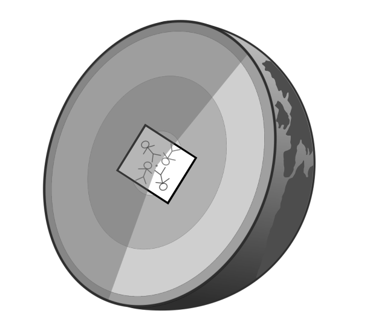
Figure 7: Sketch not to scale, for illustrative purposes only and not indicative of the answer. (A cutaway of the Earth showing a small room at its centre.)Andrew Inkersole — IOP member
Fonte: Testo (PDF) — p.15 Topic: Gravitation, Newtonian Mechanics Metodi: Newton’s Law of Gravitation, Gauss’s Law, Symmetry Argument, Physical Modeling Competenze: Physical Reasoning, Estimation & Approximation Objects: Planet
Camera sepolta
Immaginate di poter costruire una grande stanza (10m x 10m x 10m) al centro gravitazionale della terra. Volete galleggiare in camera, o stare su uno dei muri?
Scrivi i principi, le ipotesi e le considerazioni che ti hanno portato alla tua conclusione.
*Figura 7: Sketch non a scala, solo per scopi illustrativi e non indicativo della risposta. (Un taglio della Terra che mostra una piccola stanza al suo centro.)
Andrew Inkersole membro IOP
Fonte: Testo (PDF) — p.15 Topic: Gravitation, Newtonian Mechanics Metodi: Newton’s Law of Gravitation, Gauss’s Law, Symmetry Argument, Physical Modeling Competenze: Physical Reasoning, Estimation & Approximation Objects: Planet